近期在维护公司的调度平台，其中有个关键功能那就是定时任务；定时任务大家平时肯定接触的不少，比如 JDK 中的 Timer、ScheduledExecutorService、调度框架 Quartz 等。
通常用于实现 XX 时间后的延时任务，或周期性任务；
比如一个常见的业务场景：用户下单 N 分钟未能支付便自动取消订单。
实现这类需求通常有两种方式：
先看第一种，这类方式实现较为简单，只需要启动一个定时任务即可；但缺点同样也很明显，这个间隔扫描的时间不好控制。
给短了会造成很多无意义的扫描，增大数据库压力，给长了又会使得误差较大。
当然最大的问题还是效率较低，随着订单增多耗时会呈线性增长，最差的情况甚至会出现上一波轮询还没有扫描完，下一波调度又来了。
这时第二种方案就要显得靠谱多了，通过延时消息可以去掉不必要的订单扫描，实时性也比较高。
这里我们不过多讨论这类需求如何实现；重点聊聊这个延时消息，看它是如何实现的，基于实现延时消息的数据结构还能实现定时任务。
我在之前的开源 IM 项目中也加入了此类功能，可以很直观的发送一条延时消息，效果如下：
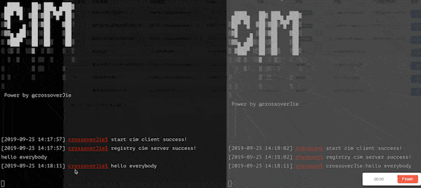
使用 :delay hahah 2 发送了一条两秒钟的延时消息，另外一个客户端将会在两秒钟之后收到该消息。
具体的实现步骤会在后文继续分析。
要实现延时消息就不得不提到一种数据结构【时间轮】，时间轮听这名字可以很直观的抽象出它的数据结构。
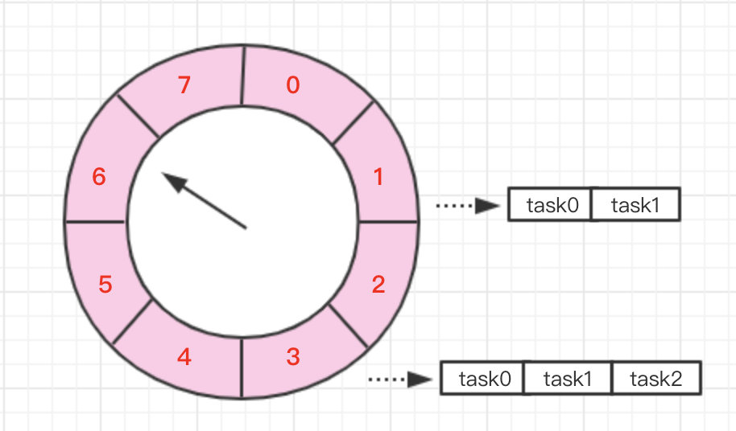
其实本质上它就是一个环形的数组，如图所示，假设我们创建了一个长度为 8 的时间轮。
task0 = 当我们需要新建一个 5s 延时消息，则只需要将它放到下标为 5 的那个槽中。
task1 = 而如果是一个 10s 的延时消息，则需要将它放到下标为 2 的槽中，但同时需要记录它所对应的圈数，不然就和 2 秒的延时消息重复了。
task2= 当创建一个 21s 的延时消息时，它所在的位置就和 task0 相同了，都在下标为 5 的槽中，所以为了区别需要为他加上圈数为 2。
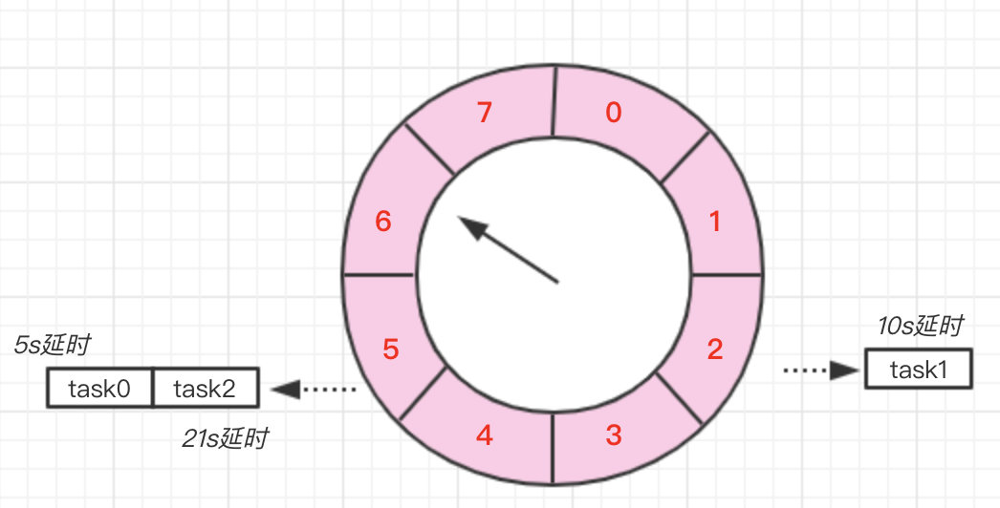
通过这张图可以更直观的理解。
当我们需要取出延时消息时，只需要每秒往下移动这个指针，然后取出该位置的所有任务即可。
当然取出任务之前还得判断圈数是否为 0 ，不为 0 时说明该任务还得再轮几圈，同时需要将圈数 -1 。
这样就可避免轮询所有的任务，不过如果时间轮的槽比较少，导致某一个槽上的任务非常多那效率也比较低，这就和 HashMap 的 hash 冲突是一样的。
理论讲完后我们来看看实际的编码实现，为此我创建了一个 RingBufferWheel 类。
它的主要功能如下：
首先直接看看这个类是如何使用的。
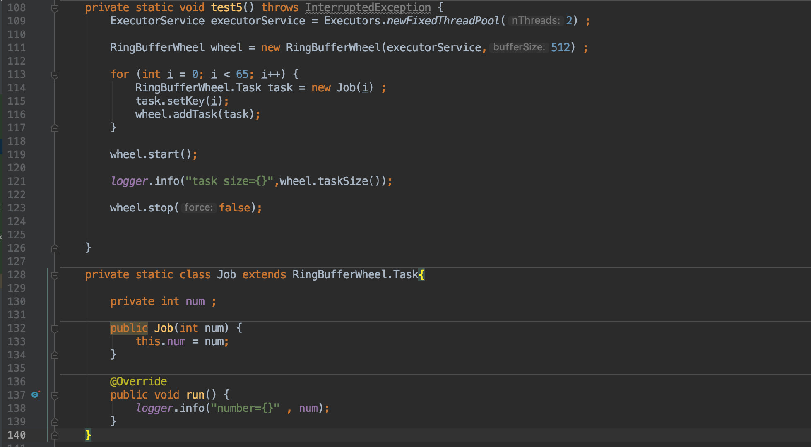
我在这里创建了 65 个延时任务，每个任务都比前一个延后 1s 执行；同时自定义了一个 Job 类来实现自己的业务逻辑，最后调用 stop(false) 会在所有任务执行完毕后退出。
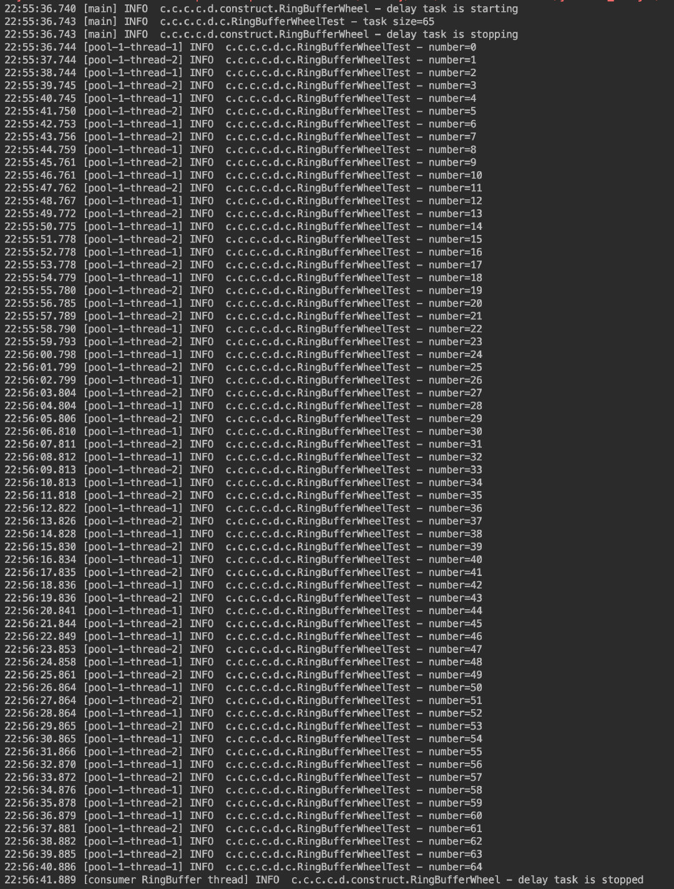
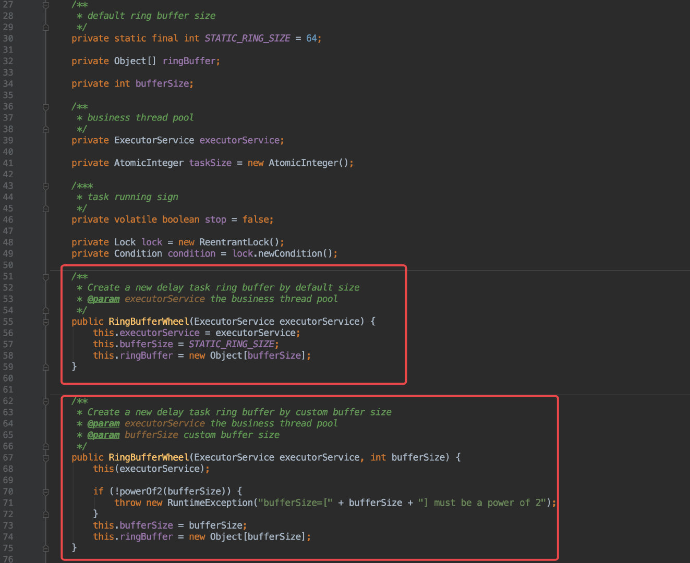
先来看看其中的构造函数，这里一共有两个构造函数，用于接收一个线程池及时间轮的大小。
线程池的作用会在后面讲到。
这里的时间轮大小也是有讲究的，它的长度必须得是 2∧n，至于为什么有这个要求后面也会讲到。
默认情况下会初始化一个长度为 64 的数组。
下面来看看添加任务的逻辑，根据我们之前的那张抽象图其实很容易实现。
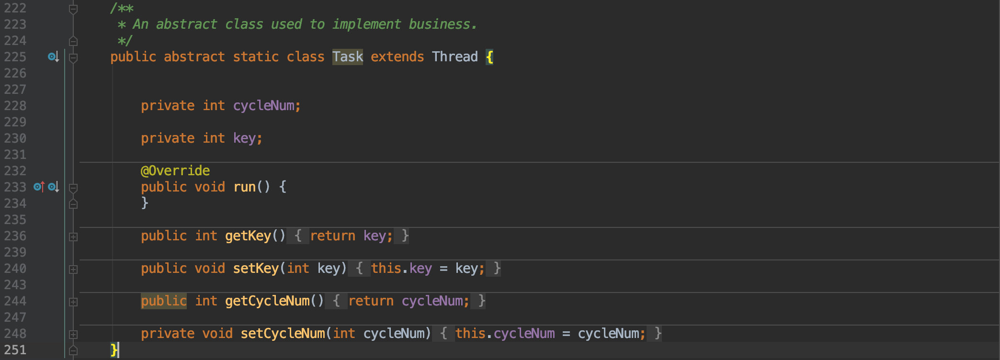
首先我们要定义一个 Task 类，用于抽象任务；它本身也是一个线程，一旦延时到期便会执行其中的 run 函数，所以使用时便可继承该类，将业务逻辑写在 run() 中即可。
它其中还有两个成员变量，也很好理解。
cycleNum 用于记录该任务所在时间轮的圈数。key 在这里其实就是延时时间。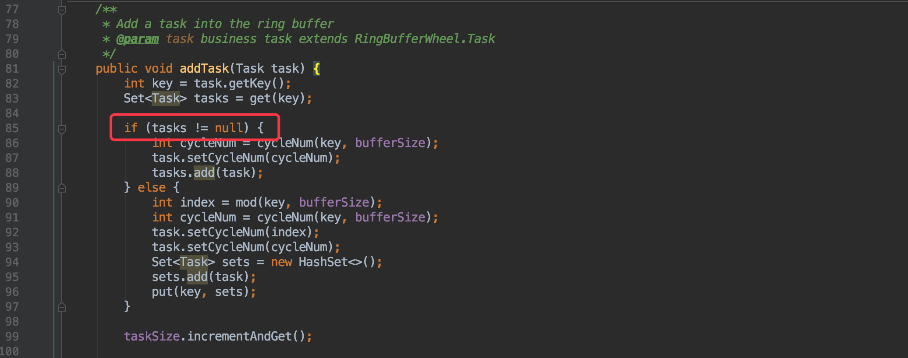
//通过 key 计算应该存放的位置
private Set<Task> get(int key) {
int index = mod(key, bufferSize);
return (Set<Task>) ringBuffer[index];
}
private int mod(int target, int mod) {
// equals target % mod
target = target + tick.get() ;
return target & (mod - 1);
}首先是根据延时时间 (key) 计算出所在的位置，其实就和 HashMap 一样的取模运算，只不过这里使用了位运算替代了取模，同时效率会高上不少。
这样也解释了为什么数组长度一定得是
2∧n。
然后查看该位置上是否存在任务，不存在就新建一个；存在自然就是将任务写入这个集合并更新回去。
private int cycleNum(int target, int mod) {
//equals target/mod
return target >> Integer.bitCount(mod - 1);
}其中的
cycleNum()自然是用于计算该任务所处的圈数，也是考虑到效率问题，使用位运算替代了除法。
private void put(int key, Set<Task> tasks) {
int index = mod(key, bufferSize);
ringBuffer[index] = tasks;
}而 put() 函数就非常简单了，就是将任务写入指定数组下标即可。
任务写进去后下一步便是启动这个时间轮了，我这里定义了一个 start() 函数。
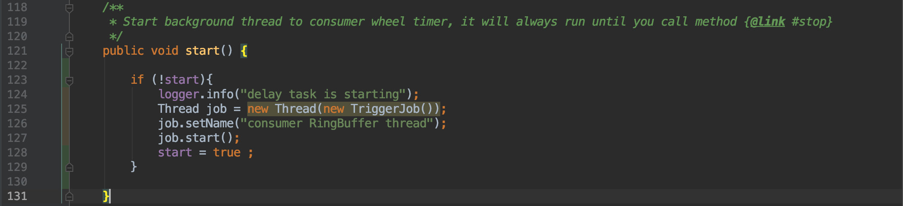
其实本质上就是开启了一个后台线程来做这个事情：
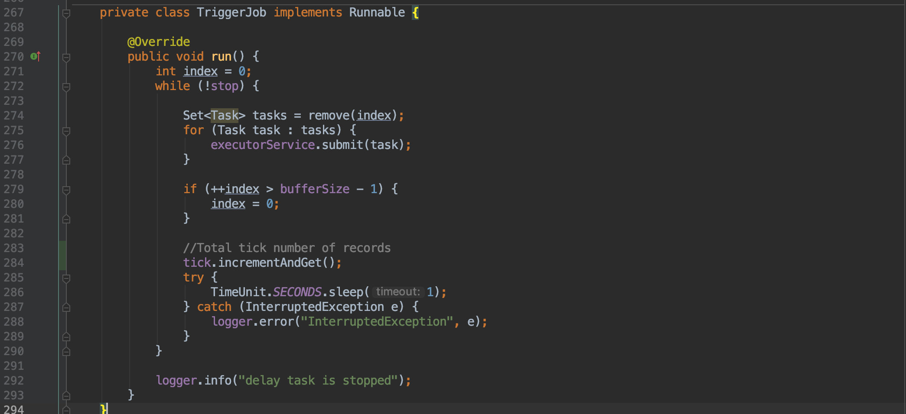
它会一直从时间轮中取出任务来运行，而运行这些任务的线程便是我们在初始化时传入的线程池；所以所有的延时任务都是由自定义的线程池调度完成的，这样可以避免时间轮的阻塞。
这里调用的 remove(index) 很容易猜到是用于获取当前数组中的所有任务。
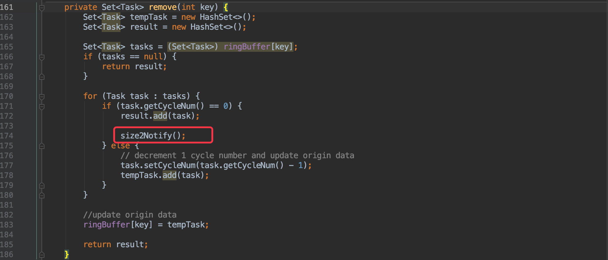
逻辑很简单就不再赘述，不过其中的 size2Notify() 倒是值得说一下。
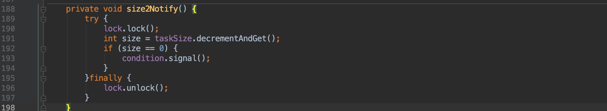
他是用于在停止任务时，主线程等待所有延时任务执行完毕的唤醒条件。这类用法几乎是所有线程间通信的常规套路，值得收入技能包。
刚才提到的唤醒主线程得配合这里的停止方法使用：
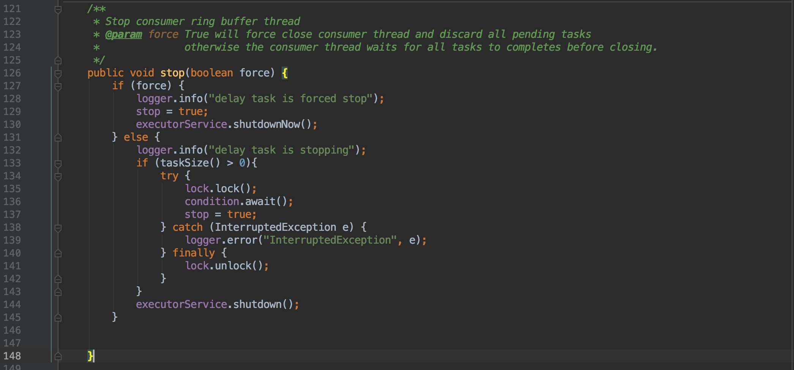
如果是强制停止那便什么也不管，直接更新停止标志，同时关闭线程池即可。
但如果是软停止（等待所有任务执行完毕）时，那就得通过上文提到的方式阻塞主线程，直到任务执行完毕后被唤醒。
介绍了核心原理和基本 API 后，我们来看看实际业务场景如何结合使用（背景是一个即时通讯项目）。
我这里所使用的场景在文初也提到了，就是真的发送一条延时消息；
现有的消息都是实时消息，所以要实现一个延时消息便是在现有的发送客户端处将延时消息放入到这个时间轮中，在任务到期时再执行真正的消息发送逻辑。
由于项目本身结合了 Spring，所以第一步自然是配置 bean。
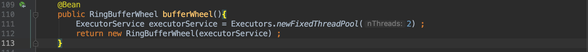
bean 配置好后其实就可以使用了。
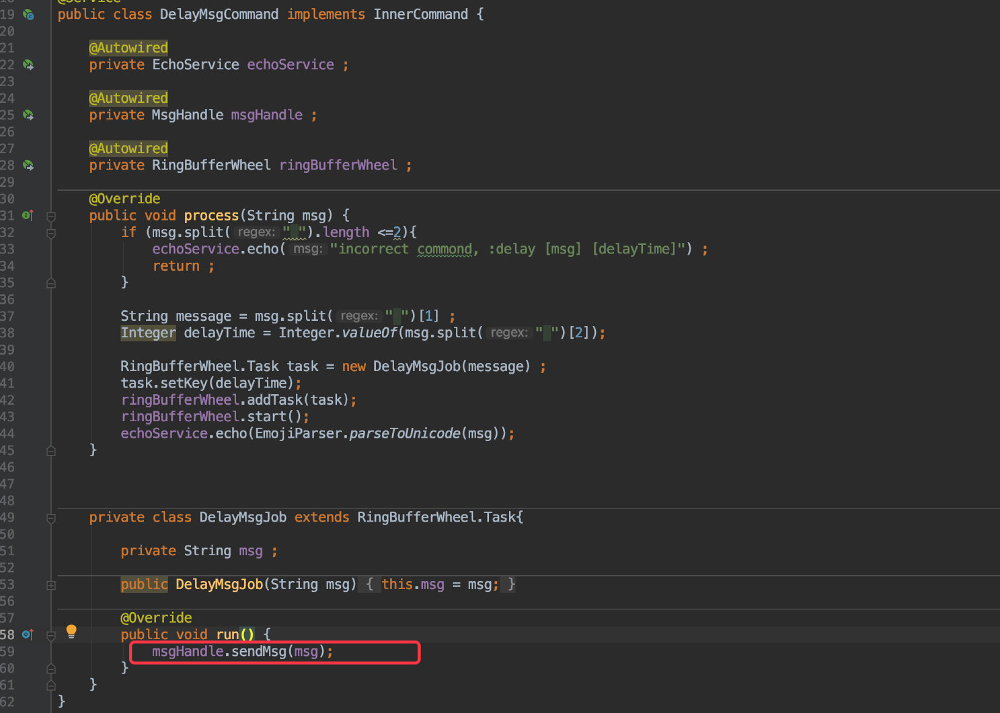
每当发送的是延时消息时，只需要将这个消息封装为一个 Job 放到时间轮中，然后在自己的业务类中完成业务即可。
后续可以优化下
api，不用每次新增任务都要调用start()方法。
这样一个延时消息的应用便完成了。
时间轮这样的应用还非常多，比如 Netty 中的 HashedWheelTimer 工具原理也差不多，可以用于维护长连接心跳信息。
甚至 Kafka 在这基础上还优化出了层级时间轮，这些都是后话了，大家感兴趣的话可以自行搜索资料或者抽时间我再完善一次。
这篇文章从前期准备到撸码实现还是花了不少时间，如果对你有帮助的话还请点赞转发。
本文的所有源码都可在此处查阅：
https://github.com/crossoverJie/cim
你的点赞与分享是对我最大的支持